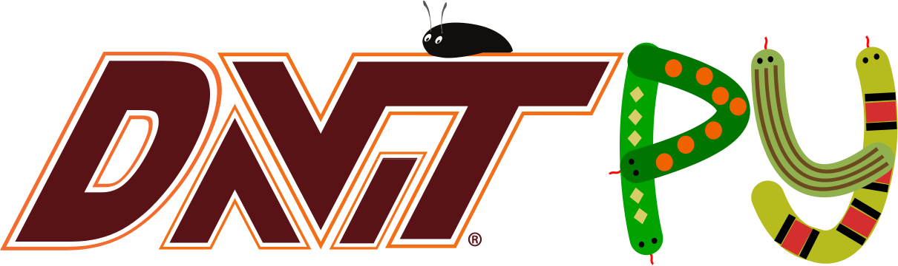

dataObj = readsav(radar,date,time,param,bandlim)
INPUTS: OUTPUTS:
alias of pydarn.proc.signal.sigio

pydarn.proc.signal.compare
pydarn.proc.signal.signalCommon
Enter search terms or a module, class or function name.